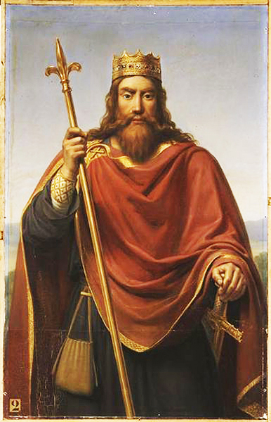
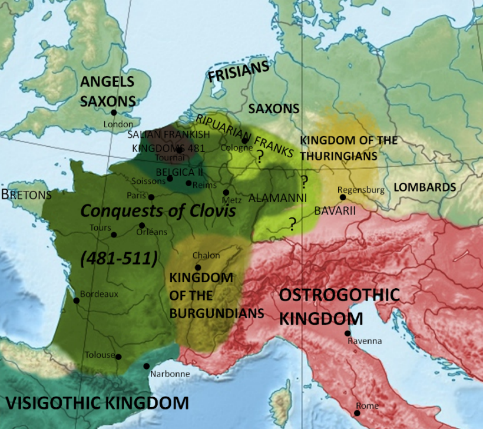
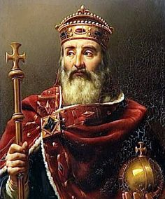
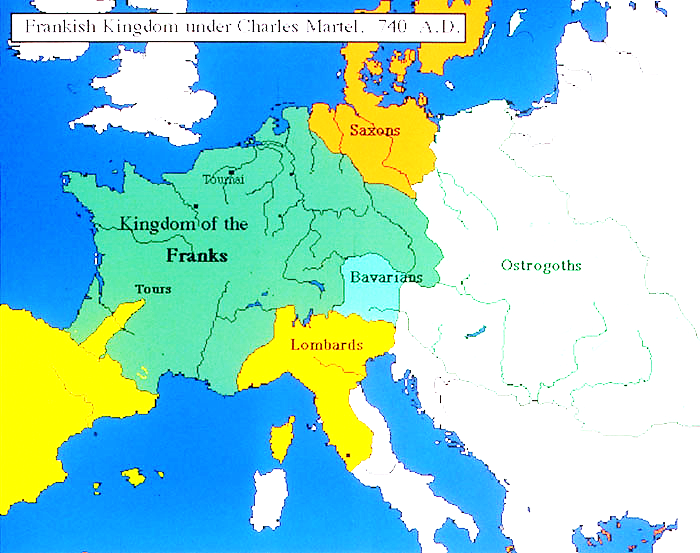
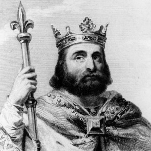
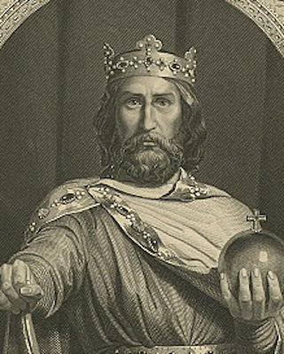

Clovis: King of the Franks

During
the Middle Ages, a Germanic people called the Franks became very
important. They began to build a new civilization, one that later
developed into modern France and Germany. The Franks lived along the
Rhine River in what is now Germany. They were more successful in
governing than other Germans. One reason for this was that the area
in which they lived was close to their homeland, and they felt fairly
secure. Also, the Franks did more than just fight and rule. They
became farmers. At first, the Franks were divided into separate
groups without a common ruler. In 481, one Frankish group chose a man
named Clovis (klo ̄ ’vis) as king. Although he was cruel and
greedy, Clovis was a good general and an able king. He eventually
brought all the Franks under one rule. He battled his way through
much of Northern Europe, fighting against barbarian tribes and
uniting them under his reign.
Part of Clovis’s kingdom later
became France, which took its name from the Franks. Clovis was the
first Germanic king to accept the Catholic religion. Clovis was not
happy with the Frankish gods. Although he prayed to them faithfully,
they failed to help him win battles. Clovis decided that if he
defeated the enemy, he would become a Christian. Clovis’s army won
its next battle. Clovis and some 3,000 Frankish soldiers, still in
full battle dress, immediately converted, or changed religion, to
Christianity. It was not long before all the Franks followed his
example. When Clovis became a Christian, he gained the support of the
native Romans living in his kingdom. Before long, the Franks began
speaking a form of Latin that later became the modern French
language. Now, all the people in Clovis’s kingdom practiced the
same religion, spoke the same language, and felt united, since the
fall of the Roman Empire. The Pope and other church officials gave
Clovis their support. Priests served in his government. In return for
the Church’s help, Clovis was expected to protect the Church
against all non-believers. Clovis extended his rule over what is now
France and western Germany and set up his capital in Paris. He
admired the Roman Empire. He wore purple robes similar to those of
the Roman emperors and made Latin the official language of the court.
After the death of Clovis, h
is sons divided the empire between
them. They fought amongst each other relentlessly, and ended up
losing all that Clovis had gained.
 Charles Martel and son Pepin


It
was not long before the Franks began to accept the leadership of a
government official known as the “Mayor of the Palace.” The Mayor
was a noble and the most important official in the king’s
household. As the Frankish kings grew weaker, the Mayors took over
many of their duties. In time, the Mayors were conducting wars,
giving out land, and settling disputes. Of all the Mayors, the most
powerful was Charles Martel. He wanted to reunite all the Frankish
nobles under his rule. Before long, Charles Martel had gained the
support of the Church. Charles Martel became known as “The Hammer”
because of his strength in battle. In 732, he led the Franks in the
Battle of Tours, one of the most important battles
in European history. The Franks defeated an army of Arabs and
Berbers who had conquered Spain in 711. The Arabs and Berbers were
Muslims, who hoped to spread their religion of Islam everywhere. The
Franks’ victory at the Battle of Tours enabled Christianity to
survive in western Europe and stopped the spread of Islam into
Europe. Charles became so popular with the people in the Frank
kingdom, that they started turning to him rather than the King.
When Charles Martel died, his son Pepin (pep’ in) became
Mayor of the Palace. With the help of the Pope and most Frankish
nobles, Pepin removed the king and started a new dynasty. Pepin was
the first Frankish king to be anointed or blessed with holy oil, by
the Pope. In return for the Church’s support, Pepin helped the Pope
when he was threatened by a group of Germans known as Lombards (lahm’
bahrdz). Pepin led an army into Italy, defeated the Lombards, and
gave the land they held in central Italy to the Pope. This gift made
the Pope the political ruler of much of the Italian Peninsula.

Charlemagne:
Charles the Great
Pepin’s son Charles became king of the Franks in 768. He is best known by his French name Charlemagne (shar’ luh ma ̄ n), which means “Charles the Great.” A powerful leader, Charlemagne wanted to bring all of western Europe under his rule. He also wanted all the Germanic people to become Christian. To achieve these goals, he waged a series of wars. First, Charlemagne went to Italy and defeated the Lombards. Next, Charlemagne attacked Saxons, who lived in what is now northern Germany. Charlemagne also led his armies in several campaigns across the Pyrenees Mountains to fight the Muslims in Spain. By 800, Charlemagne had created a large empire. It included most of the Germanic peoples who had settled in Europe since the early 400s.
Charlemagne became the most powerful leader in western Europe. The people considered him as important as any Roman emperor. Charlemagne wanted to keep close ties between the Church and the government. Church officials kept records and helped Charlemagne run the country. In turn, he appointed the bishops and regarded any act against the Church as a sign of disloyalty to him. Both Charlemagne and the Pope wanted a new Christian Roman Empire in western Europe. Christmas day in 800, Charlemagne was worshiping in St. Peter’s Church in Rome. When the religious ceremony was over, the Pope placed a crown on Charlemagne’s head. The Pope then declared him the new Roman emperor. Although Charlemagne accepted the title, he was not pleased that the Pope had crowned him. This made it seem as if the emperor’s right to rule came from the Pope rather than directly from God. Charlemagne was a wise and just ruler who issued many laws. To make sure these laws were obeyed, he set up law courts all through the empire. Charlemagne chose officials called counts to run the courts.
Most people in Charlemagne’s empire could neither read nor write. Charlemagne, however, appreciated learning. Unlike earlier Frankish rulers, he believed in education and was proud of his own ability to read Latin. He kept a slate and copybook next to his bed so that he could practice writing. Charlemagne wanted his people to be educated also. He worked hard to push back the darkness that had followed the fall of the Roman Empire. He encouraged churches and monasteries to found schools. Under Charlemagne, the arts began to flower again. Painters, sculptors, and metalworkers developed their talents. They built palaces and churches around a large courtyard as the Romans did. Artists covered palace and church walls with pictures showing stories from the Bible. They made book covers and ornamental weapons, and they decorated the manuscripts copied by scholars.
A year before
Charlemagne died in 814, he crowned his only surviving son, Louis the
Pious, as emperor. Louis was a devoutly religious man, but an
ineffective ruler. He left three sons who fought one another for
con
trol of the Empire. In 843, the brothers signed a treaty
dividing the empire into three kingdoms. As a result, the kings lost
power and central authority broke down. The lack of a strong ruler
led to the system of governing and landholding called
feudalism.